How to Work a Lead
The lead detail panel is where you do the day-to-day work of moving a single lead through your sales process in Franchise Systems Ai (FS Ai).
It gives you their contact details, a message thread, tasks, a full activity history, and their documents in one panel, without leaving your pipeline.
Opening the lead panel
Go to Sales → Pipeline and click any lead in the table. Their detail panel slides in from the right with the lead's name, current status, brand, and location at the top.
The panel opens on the Details tab, and you can switch between Details, Chat, Tasks, Activity, Deal, and Assets using the tabs below the header.
The panel stays layered over your pipeline, so closing it (the X in the top left) drops you right back where you were.
Reviewing and editing details
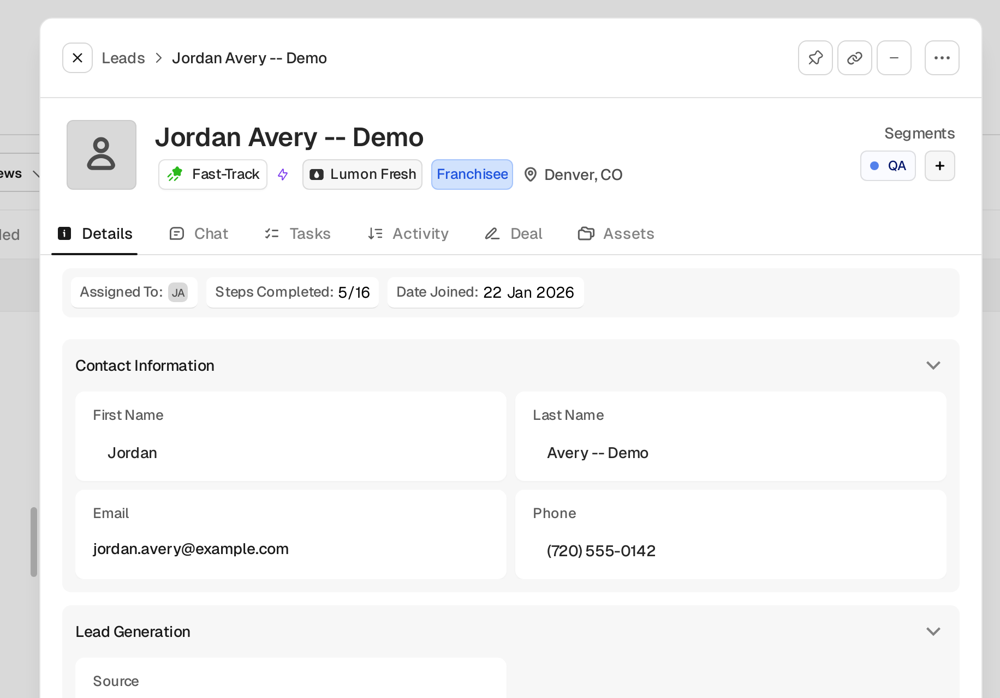
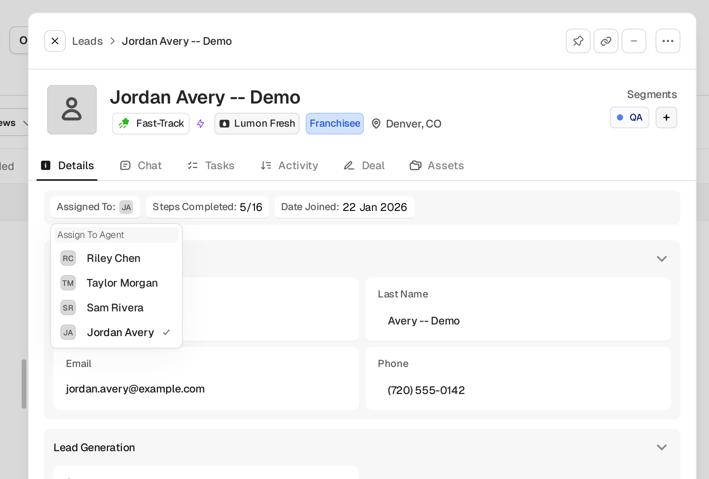
The Details tab holds everything you know about the lead:
- Assigned To: click to assign the lead to a sales rep or reassign it to someone else.
- Steps Completed: how far the lead has progressed through the applicant portal.
- Date Joined: when the lead entered your pipeline.
- Contact Information: first name, last name, email, and phone.
- Lead Generation: the source and UTM data the lead came in with.
- Any additional groups your brand collects through the applicant portal forms, such as onboarding questions.
Most fields are editable in place. Click a field, type your change, and click away to save.
If the lead has signed documents on file, View Signed FDD and View Signed Franchise Agreement buttons appear at the top of this tab.
Changing status and segments
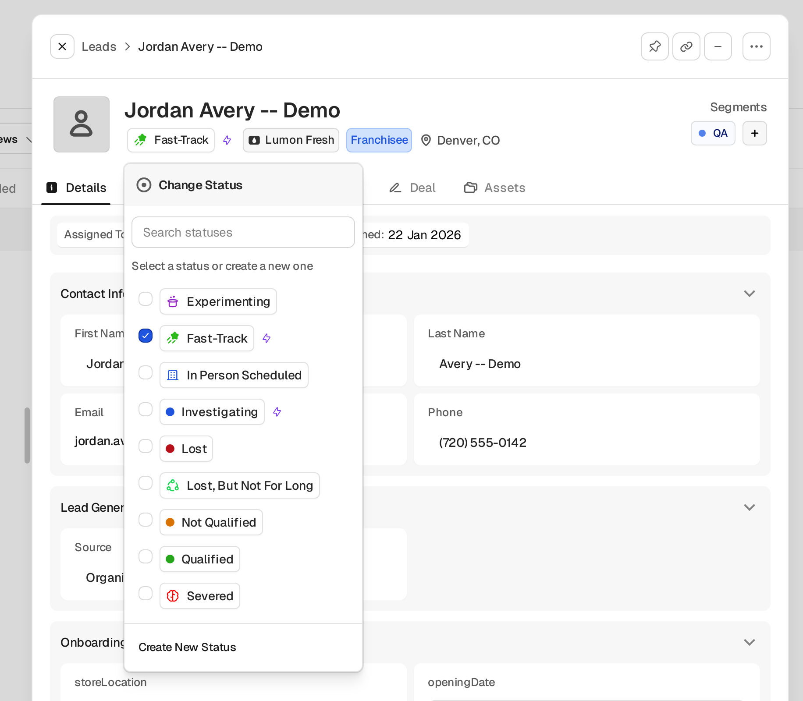
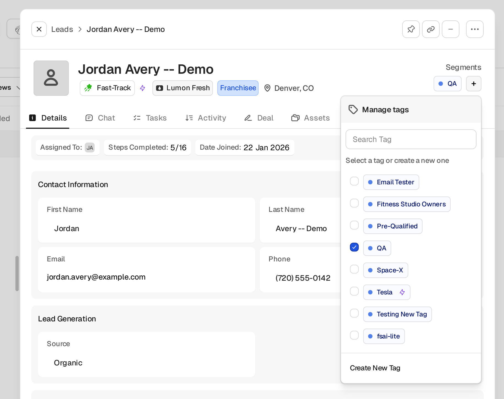
The status shown next to the lead's name (for example, Investigating or Fast-Track) is clickable. Select it to move the lead to a different stage.
On the right side of the header, use the Segments area to add or remove segment tags, which is how you group leads for filtering and automations.
Messaging the lead
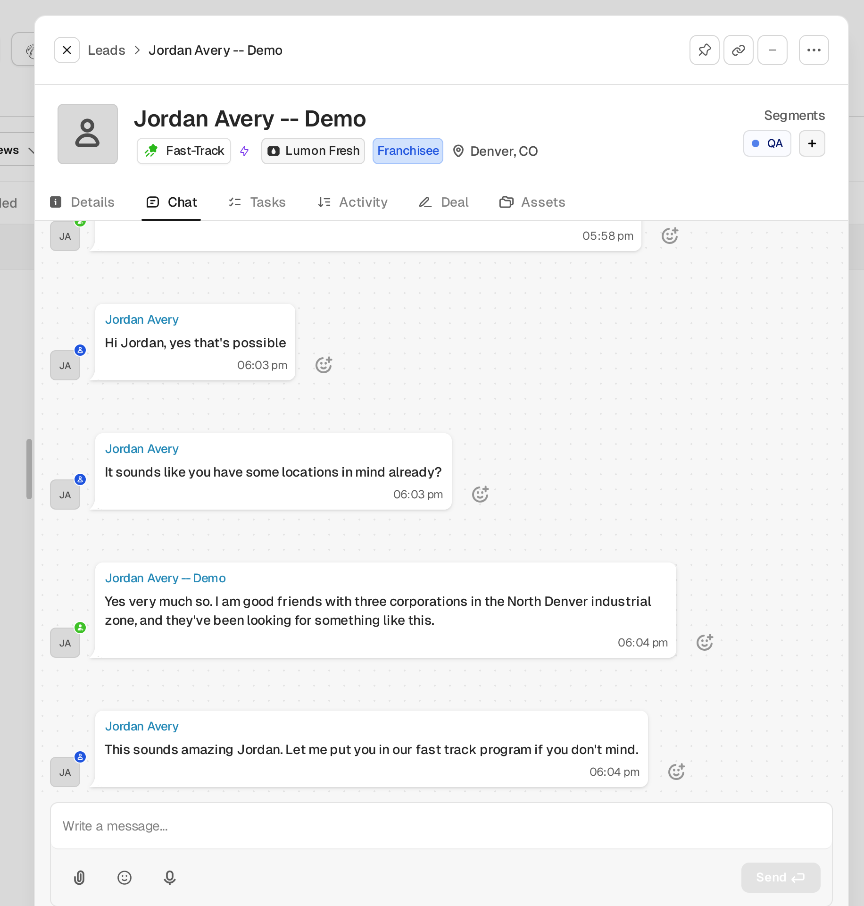
The Chat tab is a live message thread with the lead. Type in the Write a message box and click Send.
You can attach files, add emoji, and record voice messages using the icons in the composer.
The full back-and-forth stays here for anyone on your team who opens the lead.
Tracking tasks
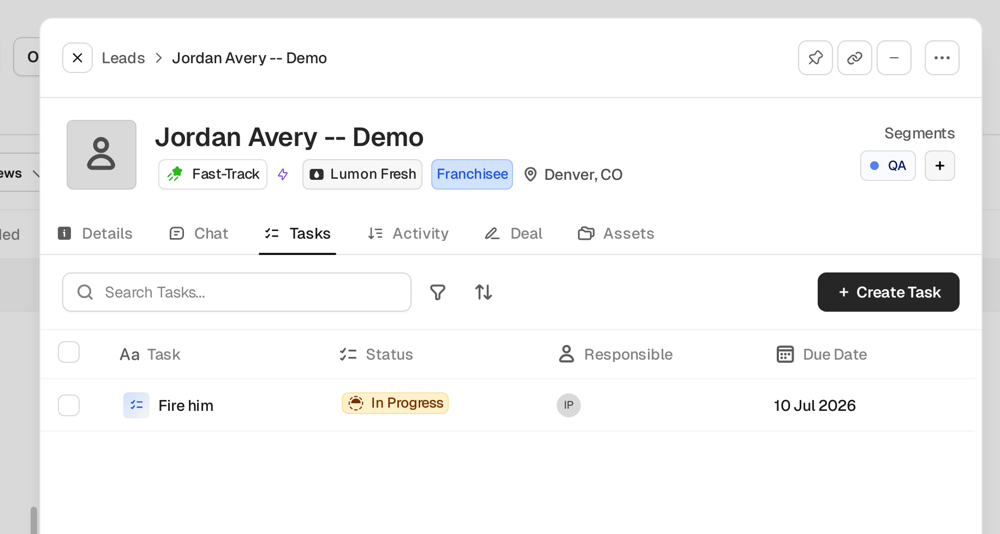
The Tasks tab lists the to-dos tied to this lead, with columns for the task, status, who is responsible, and the due date.
Click + Create Task to add a new one so nothing slips between calls.
Reviewing activity
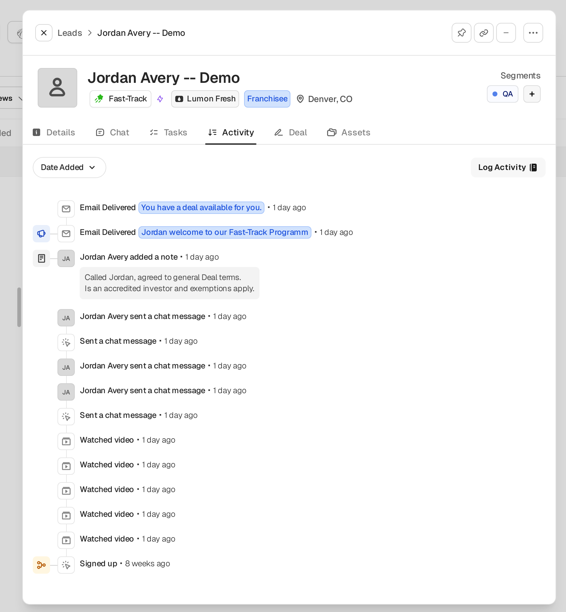
The Activity tab is a timeline of everything that has happened with the lead: emails delivered, chat messages, notes, videos watched, and signup events.
Use Log Activity to add a note recording a call or a next step.
Sort the timeline with the dropdown at the top left.
Reviewing assets
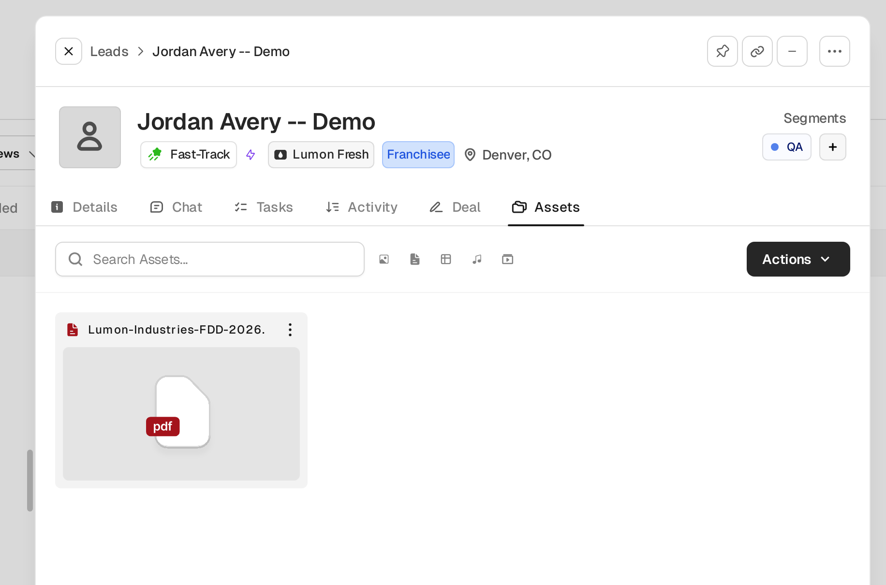
The Assets tab holds the documents attached to this lead, such as a signed FDD.
Search by name, filter by file type with the icons above the list, or use the Actions menu to upload or link a document.
Handing off to a deal
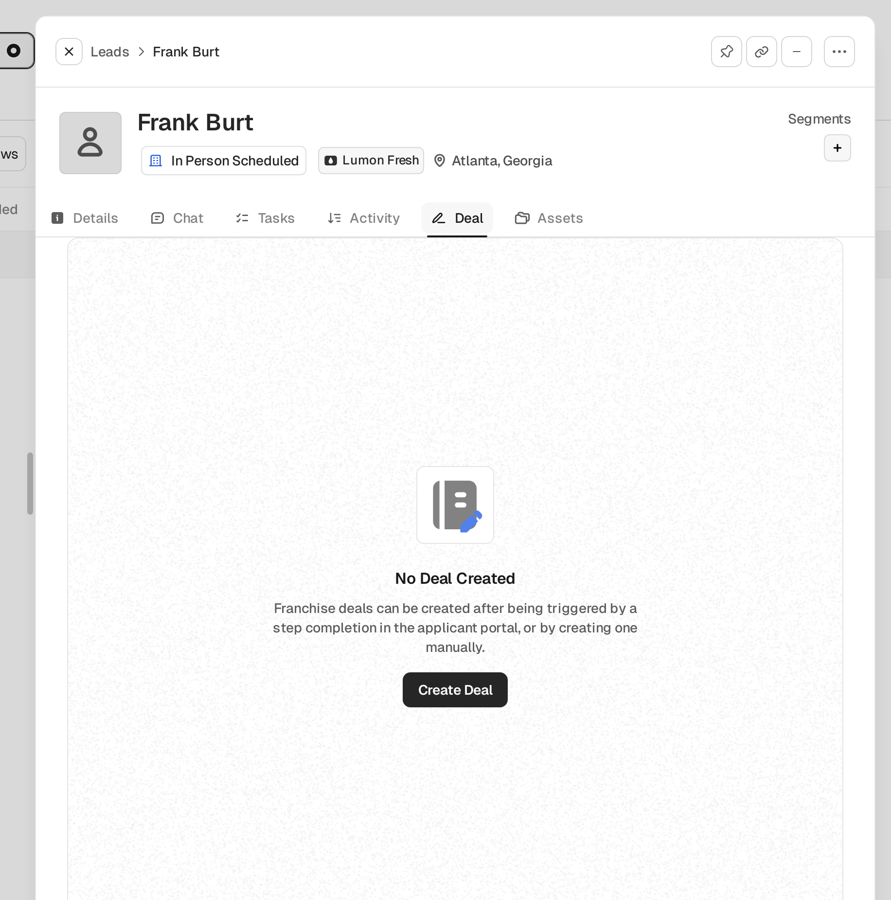
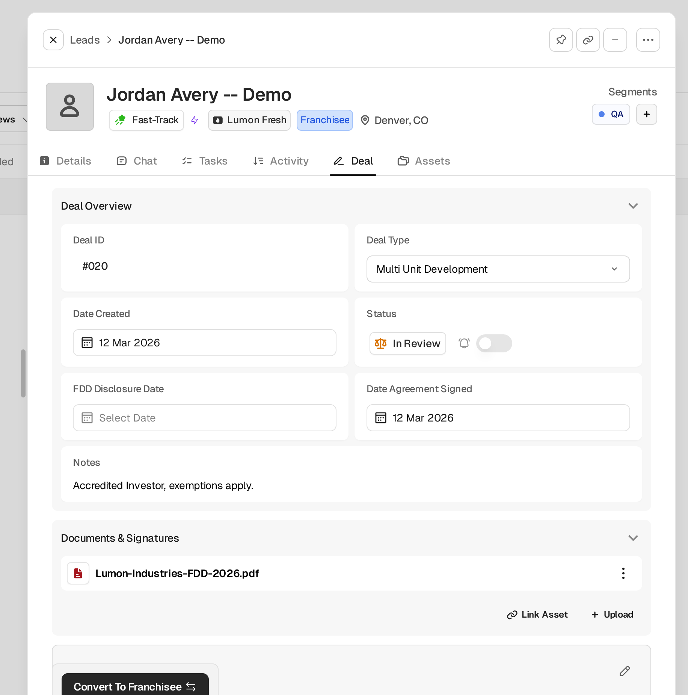
The Deal tab shows the lead's deal without leaving the panel.
If no deal exists yet, you'll see a No Deal Created message explaining that deals are created automatically after an applicant completes a step in the portal, or manually with the Create Deal button.
Once a deal exists, this tab shows the deal overview in place, where you manage its details.
If the deal hasn't been converted yet, a Convert To Franchisee button appears so you can move it forward without leaving the lead panel.
For a full walkthrough of deals, see About Deals.
Quick actions
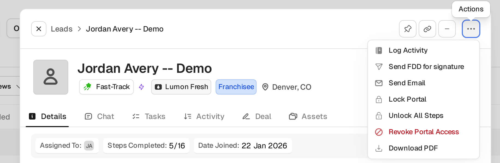
The ... menu in the top right of the panel gathers the actions you take on a lead, including sending a portal invite, sending an email, sending an FDD for signature, converting the lead to a franchisee, locking or unlocking the portal, and downloading a PDF of the lead's profile.
The pin icon keeps the lead in your saved tabs, and the link icon copies a direct link you can share with a teammate.
About Sales Analytics
The Analytics page in Franchise Systems Ai (FS Ai) is your reporting view for one brand's sales and applicant portal performance.
It shows how leads are coming in, where they are coming from, and how far applicants get through your onboarding portal, across a date range you choose.
You find it under Sales → Analytics.
The page has two tabs: Overview (default) and Portal Steps.
Picking your brand and date range
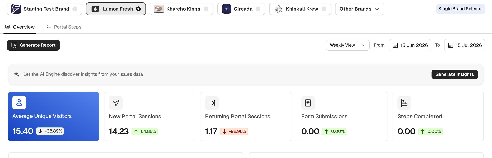
Analytics reports on one brand at a time.
Use the brand selector at the top of the page to choose which brand you are looking at.
Note: This brand selector is independent. It does not follow the brand you picked on Sales → Pipeline or elsewhere. If your numbers look wrong, check that the right brand is selected here first.
Set the reporting window with the controls on the Overview tab:
- View dropdown: choose Daily View, Weekly View, or Monthly View. This controls how the charts group data along the time axis.
- From and To: pick the start and end dates for the whole report.
Every widget on the Overview tab respects these settings.
Reading the Overview
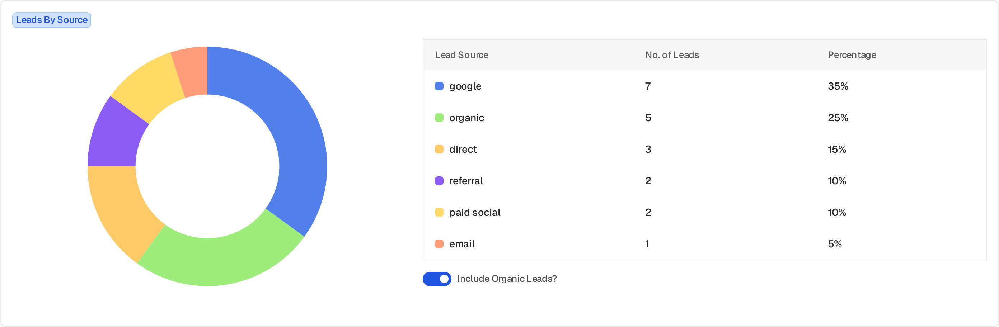
At the top are five stat tiles giving you headline numbers for the selected range: Average Unique Visitors, New Portal Sessions, Returning Portal Sessions, Form Submissions, and Steps Completed.
Each tile shows a percentage change, in green or red, comparing the current range against the prior period.
Below the tiles are charts covering three areas.
Most charts have a Bar and Line toggle so you can switch how the trend is drawn.
Where leads come from:
- Leads Over Time: new leads across your date range.
- Leads By State: lead volume by state, with a Map and List toggle.
- Leads By Source: a donut chart plus a table breaking leads down by source, with counts and percentages. The Include Organic Leads? toggle controls whether leads with no attributed source are counted. Turn it off to see only leads that carry a known campaign or UTM source.
Applicant portal engagement:
- Unique Portal Visits and Applicant Portal Form Submissions: traffic and form activity in the portal.
- Steps Completed: onboarding steps applicants finished over time.
- Returning Applicant Portal Users and New Applicant Portal Users: how many applicants are coming back versus arriving for the first time.
Deal and disclosure progress:
- FDDs Sent and FDDs Signed: Franchise Disclosure Documents issued to and signed by applicants.
- Franchisees Converted: applicants who became franchisees in the range.
The Portal Steps funnel
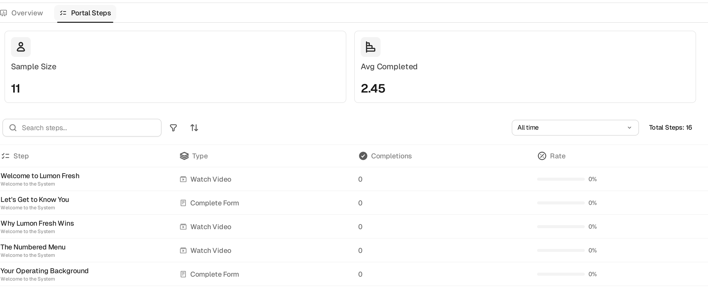
The Portal Steps tab breaks your applicant portal down step by step so you can see where applicants drop off.
Two tiles sit at the top:
- Sample Size: the number of applicants counted in this funnel, meaning those who have completed at least one portal step in the selected range.
- Avg Completed: the average number of steps each of those applicants has finished.
Below the tiles is the funnel list.
Each row is one onboarding step and shows:
- Step: the step name and the section it belongs to.
- Type: what the applicant does on that step, such as Watch Video, Complete Form, Sign a Document, Schedule Call, or Slides.
- Completions: how many applicants finished that step.
- Rate: completions as a percentage of the sample size.
Use the search box to find a step by name, the filter icon to narrow by type or completion rate, and the sort control to order the list.
The range dropdown (defaulting to All time) sets the window this funnel is measured over.
Generating a report
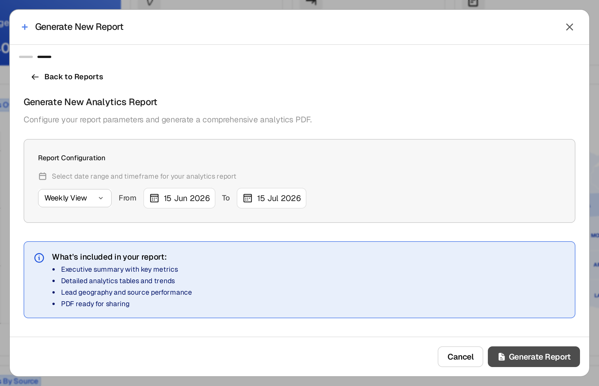
Click Generate Report to open the reports panel.
Any reports you have already generated are listed here to download again.
To create a new one, choose Generate New Report, confirm the date range and view, and generate.
FS Ai builds a PDF covering an executive summary of key metrics, detailed analytics tables and trends, and lead geography and source performance, ready to share.
Generating insights
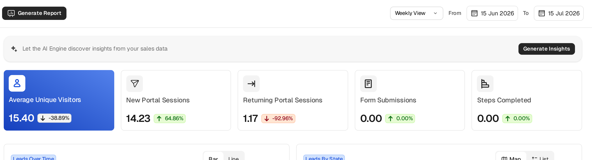
The Generate Insights panel near the top of the page runs the AI Engine over your sales data and returns written findings: recommendations, trends, and key observations.
Some insights include a shortcut button that takes you straight to the related area, such as your applicant portal, sales leads, or territories.
Click Generate Insights to run it.
Submitting a Ticket
When something comes up in your unit that needs your brand's help, you can submit a ticket.
It goes straight to your brand team, and you track their reply in the portal instead of losing it in email.
Finding the help menu
The Need help? button sits at the top right of the portal, marked with a question bubble icon.
Click it for a short menu:
- Submit a ticket: start a new ticket.
- My tickets: see everything you've sent and your brand's replies.
- Open Helpdesk: browse these guides if you'd rather look something up first.
Submitting a ticket
Click Submit a ticket and a short flow walks you through four steps:
- Type: pick the category that fits your issue. Your brand sets up these categories, so what you see depends on how they've set it up. There's also Something else for a general request, and Bug or technical issue for a problem with the portal itself.
- Details: add a short Subject and a Description of what's going on.
- Attachments: drag in screenshots, photos, or short videos. When you start a ticket from the Need help? button, the portal grabs a picture of the page you were on and attaches it for you. Remove it if you'd rather not share it.
- Review: check it over and press Submit. You'll get a confirmation that it's on its way.
Tracking your tickets
Open My tickets from the same menu to see every ticket you've submitted.
Filter along the top by category, and open any ticket to message back and forth with your brand team, like a conversation.
Each ticket carries a status so you always know where it stands:
- Open: submitted and waiting to be picked up.
- In progress: your brand team is working on it.
- Waiting on you: they need something from you to move forward.
- Resolved: handled.
- Closed: wrapped up.
Images pending capture.
About Automations and Runs
The Automations and Runs tabs on the Workflows page are where you build event-driven workflows and watch them execute in Franchise Systems Ai (FS Ai).
Automations do the work automatically when something happens to a lead, deal, or other record. Runs is the log of every time an automation has fired.
You reach both from the sidebar under Sales → Workflows. The same tabs appear under Marketing and Operations, and each department has its own automations.
Prerequisite: You need write access to the department (Sales, Marketing, or Operations) to create or publish an automation.
Automations vs. sequences
An automation is an event-driven workflow you build in the workflow builder. It starts from a trigger, then runs steps like delays, conditions, and actions in the order you connect them.
Sequences live on their own tab on the same page and are covered separately. For the full vocabulary of triggers, action steps, conditions, and branching, see Creating Content and Workflows and About Sequences and Workflows.
This article covers the Automations list and the Runs log.
The Automations tab
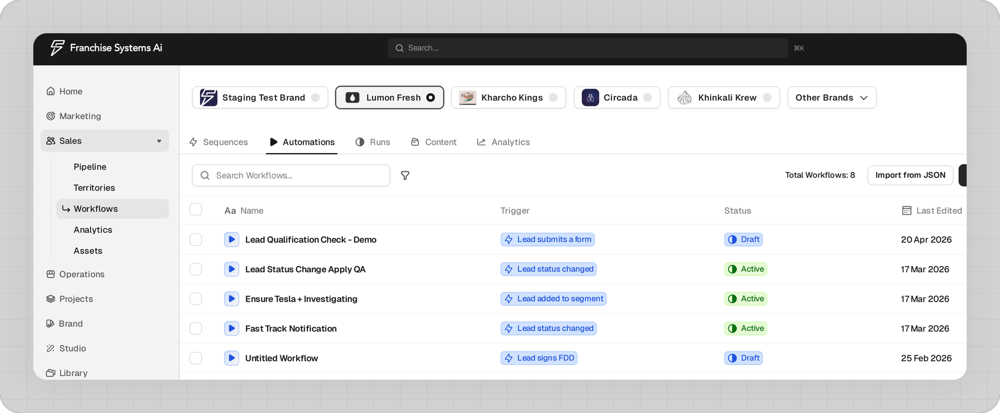
The Automations tab lists every automation in the department, one row each. The columns are:
- Name: what you named the automation.
- Trigger: the event that starts it (for example, "Lead status changed" or "Lead submits a form").
- Status: Draft while you are still building, Active once it is published and listening for events.
- Last Edited: when the automation was last changed.
Use Search Workflows to find an automation by name or trigger. Use the filter to narrow the list to Published or Draft.
Select one or more rows to Duplicate or Delete them.
Creating an automation
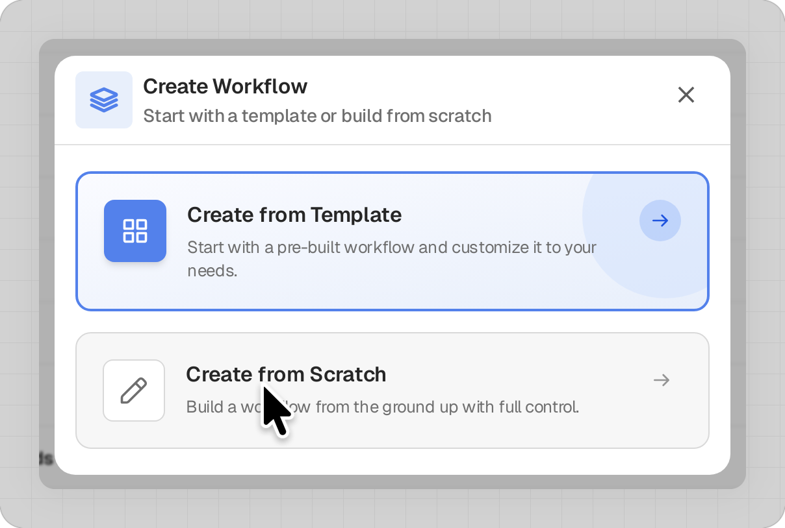
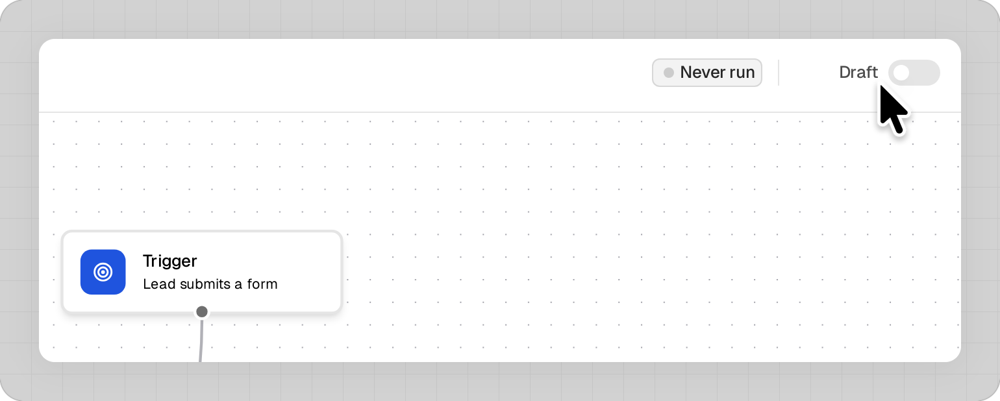
Click + Create Workflow. You then choose how to start:
- Create from Template: pick a pre-built automation and customize its key settings before the builder opens.
- Create from Scratch: open an empty builder and set the trigger and steps yourself.
You can also click Import from JSON to load a saved automation file exported from elsewhere. It opens in the builder as a new draft.
Every automation opens in the workflow builder, where you set the trigger, add steps, and connect them. New automations start in Draft and do not run until you publish them.
To go live, open the automation and switch the publish toggle from Draft to Published. Published automations show as Active in the list.
The builder checks the automation first. If a step is incomplete it flags the problem, and the status stays Draft until you fix it or choose to publish anyway.
What happens when an automation runs
Once an automation is Active, it listens for its trigger event.
Each time a matching event happens, FS Ai starts a run for the single record that triggered it. One lead hitting the trigger creates one run for that lead; ten leads create ten separate runs.
The run walks through the steps you built, in order. A Delay step holds the run open until its timer is up, so a run that includes a one-day delay stays in progress for a full day before it completes.
The Runs tab
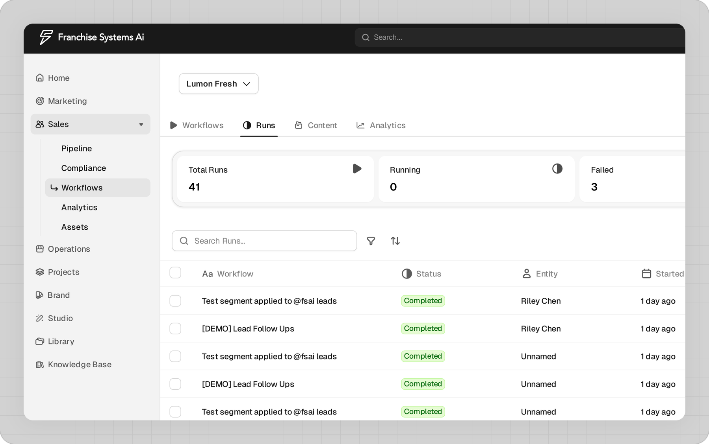
The Runs tab is the log of every automation execution in the department. Four tiles at the top summarize the current view:
- Total Runs: how many runs are listed.
- Running: runs still in progress.
- Failed: runs that hit an error.
- Completed: runs that finished all their steps.
Below the tiles, each run is a row. The columns are:
- Workflow: which automation ran.
- Status: Completed (green), Running (blue), Failed (red), or Cancelled (gray).
- Entity: the record the run acted on, usually the lead or deal by name.
- Started: when the run began.
- Duration: how long it took, from a few seconds to hours when a delay is involved.
- Steps: how many steps the run executed.
Search runs by name, filter by status, and sort by date to focus the list.
To stop runs that are still in progress, select them and choose Cancel Runs. Cancelling stops the remaining steps and cannot be undone.
Using Runs to debug
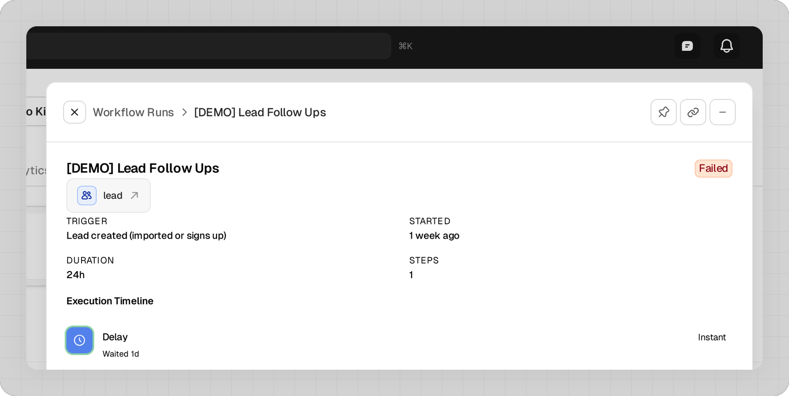
When someone asks "why didn't my lead get that email," the Runs tab is where you find out.
Click a run to open its detail panel. The panel shows the trigger that started it, the record it acted on (click through to open that lead or deal), and an execution timeline of every step.
Each step in the timeline carries its own outcome:
- Completed: the step ran successfully.
- Skipped: the run took a different path around this step.
- Failed: shows a View error link with the reason.
Read the timeline top to bottom to see exactly where the run stopped or which path it followed. If a run shows as Cancelled, the panel explains why, for example "Cancelled by automation rule," "Timed out," or that the record was deleted before the run finished.
About Segments
A segment is a group of leads in Franchise Systems Ai (FS Ai) that share something in common, such as a tag you have applied, their activity level, or their stage in your pipeline.
You use segments to act on many leads at once: send them an email, enroll them in a sequence, or filter your pipeline down to just that group.
Find them under Sales → Pipeline on the Segments tab.
Where segments come from
You don't create segments by hand. That's why the Segments tab has no create button.
Each segment appears on its own as you work your pipeline. A segment comes from one of three places:
- Built-in groups: FS Ai maintains these for you. They include All Sales Leads, In Applicant Portal, Not In Applicant Portal, and No Activity in 7, 30, or 90 Days.
- Tags: every tag you create becomes its own segment. This is how you build custom segments.
- Custom statuses: every custom lead status you define also appears as a segment.
The built-in segments are there from the start, even before a brand has any leads. The tab grows as you add tags and custom statuses.
Create a custom segment by tagging leads
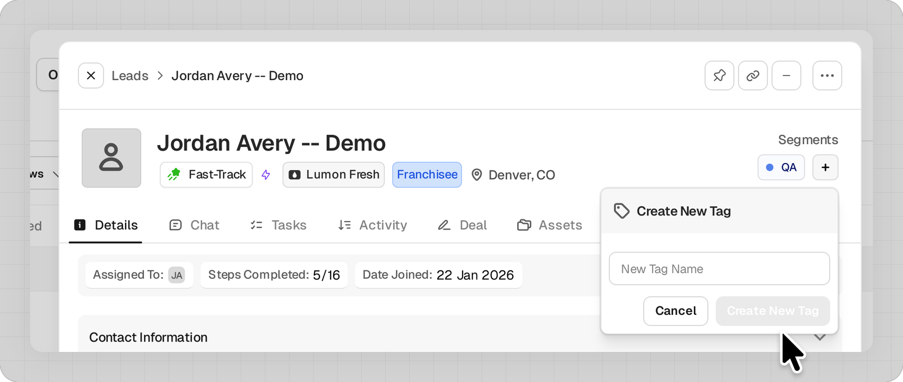
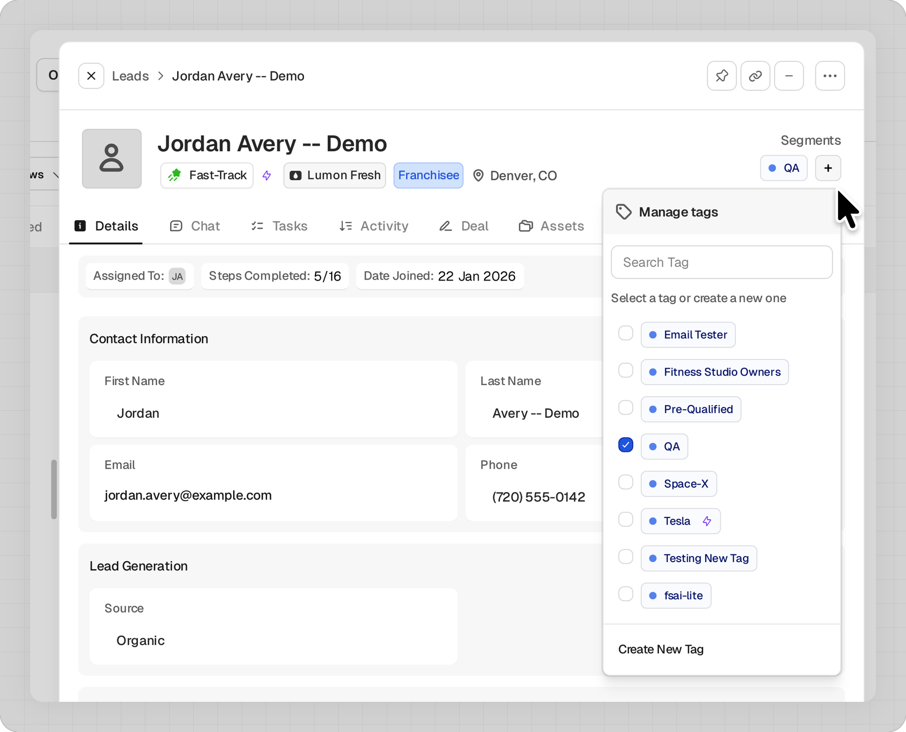
To create your own segment, tag a lead.
- Go to Sales → Pipeline and click a lead to open its detail panel.
- In the Segments area of the panel header, click the + button to open the Manage tags popover.
- Select an existing tag, or click Create New Tag, name it, and save.
The moment a tag exists on a lead, it shows up on the Segments tab as a segment.
To tag several leads at once, select them with the checkboxes in the Leads table and apply a tag from the bulk toolbar.
Removing a tag from a lead removes that lead from the segment.
Read the Segments tab
Each row shows four things:
- Name: the segment name, which is the tag, the status, or the built-in group.
- Segments: a category label, such as Tagged Audience, Status, Activity, or Portal Status.
- Date Created: when the segment was created.
- Size: how many leads are currently in it.
Use Search Segments, the filter, and the sort controls to find a segment. Total Segments in the top right counts them all.
What segments unlock
Click any segment that has at least one lead to open the send flow. From there you can:
- Send the whole segment a one-off email from a template.
- Enroll the whole segment in a multi-step sequence with timed delays between messages.
Tagging a lead can also start a sequence automatically, since sequences can trigger off a tag.
For how to build one, see Creating Content and Workflows.
You can also filter the Leads table by segment to narrow your pipeline to a single group. For working an individual lead, see How to Work a Lead.
About Link Tracking
Link Tracking in Franchise Systems Ai (FS Ai) lets you create short, trackable links so you can see which campaigns, print pieces, and QR codes actually drive traffic to your applicant portal.
Every time someone opens one of your links, FS Ai records the click and then forwards them to wherever you point the link. That gives you attribution: you learn which channel a visitor or lead came from instead of guessing.
You find it under Studio → Link Tracking.
The page has three tabs: Links (default), QR Templates, and Analytics.
Setting up your brand and domain
Link Tracking reports on one brand at a time.
Use the brand selector at the top of the page to choose which brand you are working in.
Note: This brand selector is independent. It does not follow the brand you picked elsewhere in the dashboard. If a brand looks empty or you cannot create a link, check that the right brand is selected here first.
Tracking links are built on your applicant portal domain, so you need a domain connected before you can create any.
If you have not connected one yet, a red banner reads No domain connected to your Applicant Portal and the create action stays disabled. Connect a domain to your applicant portal first, then come back.
Creating a tracking link
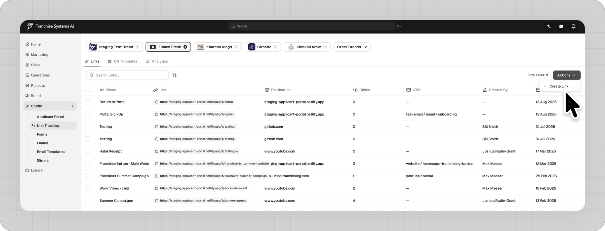
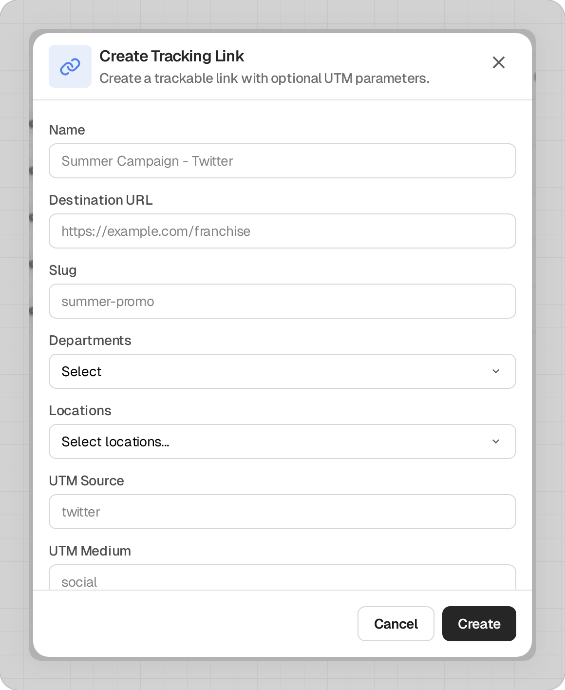
On the Links tab, open Actions and choose Create Link. Fill in the dialog:
- Name: an internal label for the link, such as "Summer Campaign - Twitter". This is what you see in the table.
- Destination URL: the full web address the link sends people to, such as your applicant portal signup page or your main website.
- Slug: the short piece at the end of the tracking link. FS Ai fills this in from the Name automatically, and you can edit it. It must be unique, so the dialog warns you if the slug is already taken.
- Departments: pick at least one of Sales, Marketing, or Operations to tie the link to a team.
- Locations: optionally attach the link to one or more of your locations.
- UTM Source, UTM Medium, UTM Campaign: campaign tags added to the link so you can identify traffic later in reporting (for example, newsletter as the source or july-promo as the campaign). FS Ai appends these to the destination URL when someone follows the link.
Click Show advanced UTM parameters to add UTM Term and UTM Content as well.
A live preview near the bottom shows the final tracking link as you type.
Click Create to save it.
The tracking link and how it works
Your finished link looks like `https://your-portal-domain/t/your-slug`.
When someone opens it, FS Ai logs the click, appends your UTM values to the destination URL, and forwards the visitor there.
Because the click is tied to your applicant portal, FS Ai can also connect it to a prospect, applicant, or franchisee where it recognizes them.
Sharing and copying a link
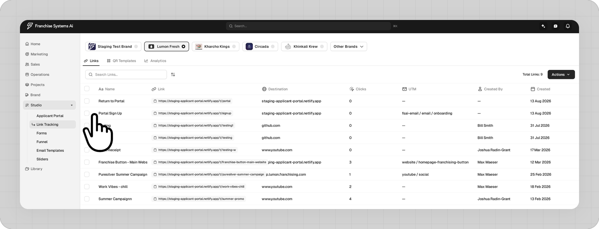
In the Link column of the table, click the copy icon on any row to copy that link's full tracking URL to your clipboard.
Paste it wherever you need it: an ad, an email, a social post, or a printed flyer.
Reading the Links table
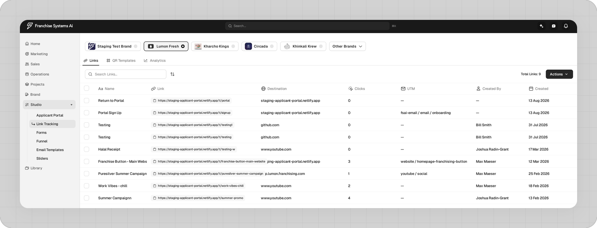
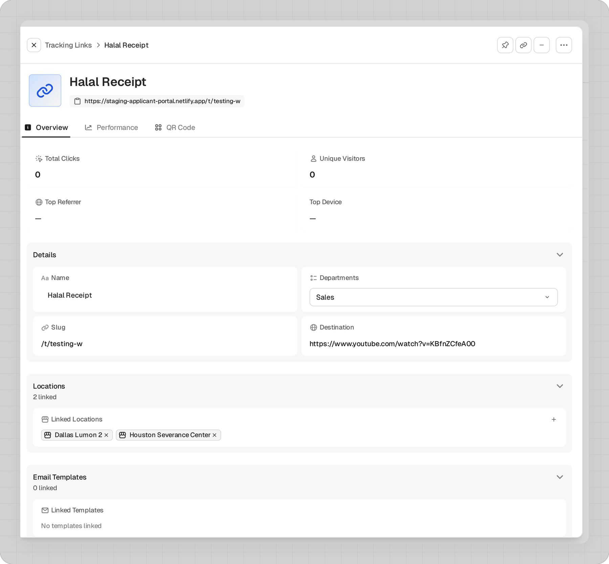
Each row shows one tracking link:
- Name: your internal label.
- Link: the tracking URL, with the copy icon.
- Destination: where the link forwards to.
- Clicks: how many times the link has been opened.
- UTM: the source, medium, and campaign tags, combined.
- Created By and Created: who made the link and when.
Use Search Links and the sort control to find a link. Total Links in the top right counts them all.
Click any row to open the link's detail panel, with its own overview, performance, and QR code views.
QR Templates
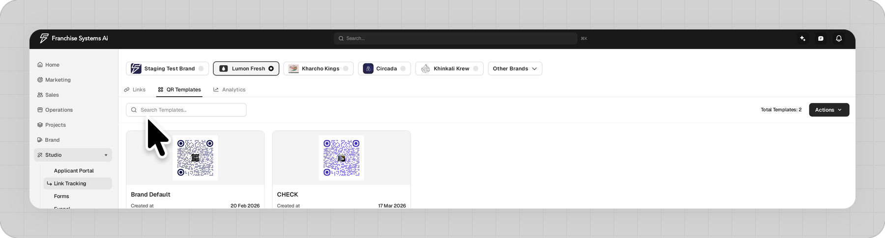
The QR Templates tab holds reusable QR code styles, including a Brand Default, so your printed codes share one look.
A template stores colors and an optional logo. You then apply a template when you generate a QR code for a specific link from that link's detail panel.
The Analytics tab
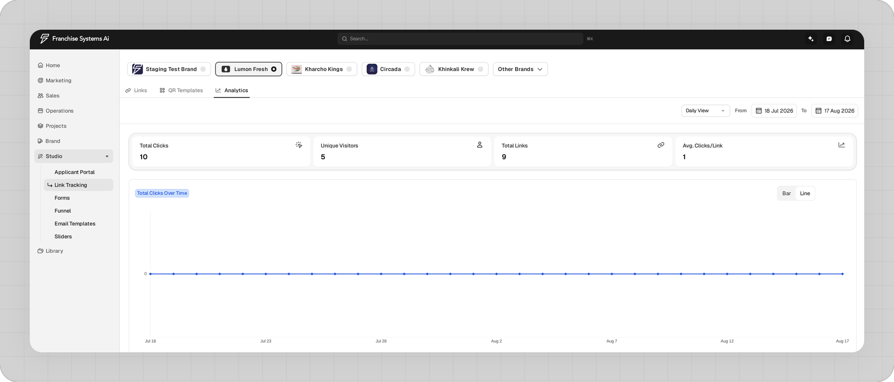
The Analytics tab rolls up performance across all of a brand's links.
It defaults to the trailing 30 days, and you can change the date range and switch the view between Hourly, Daily, Weekly, and Monthly.
Four tiles give you the headline numbers: Total Clicks, Unique Visitors, Total Links, and Avg. Clicks per Link.
Below them, the Total Clicks Over Time chart plots activity across your range, with a Bar and Line toggle.
Alongside it are breakdowns by device, browser, referrer, and country.
The UTM Source you set on a link is the same source dimension used elsewhere in reporting. When a tracking link points at your applicant portal, its source feeds lead attribution.
For lead-level source reporting, see About Sales Analytics.
Settings refresh shots (Batch A)
setting-up-your-profile
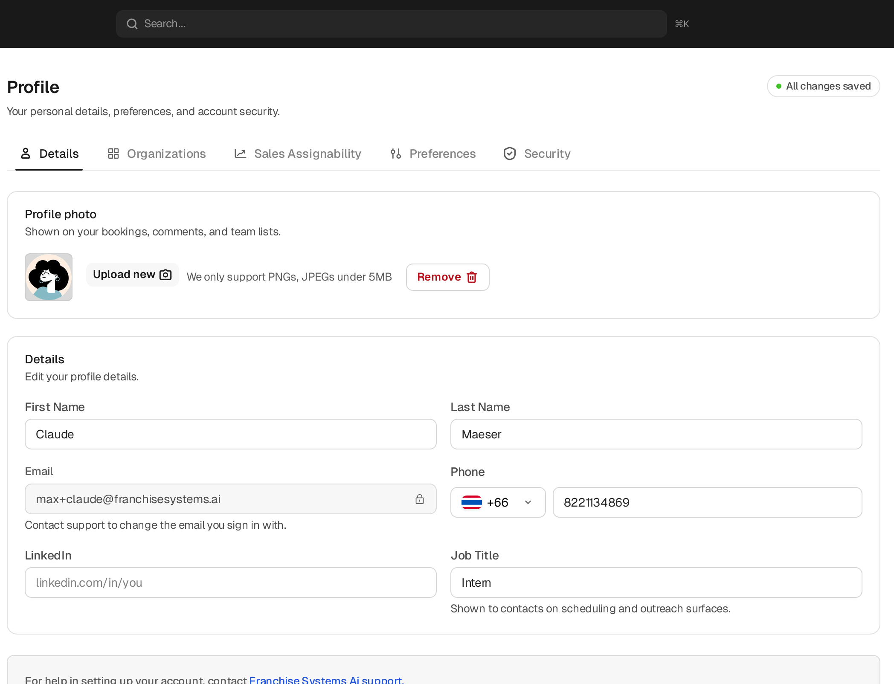
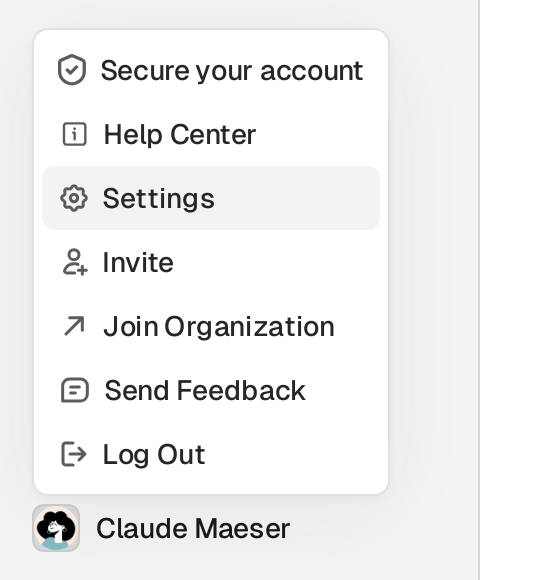
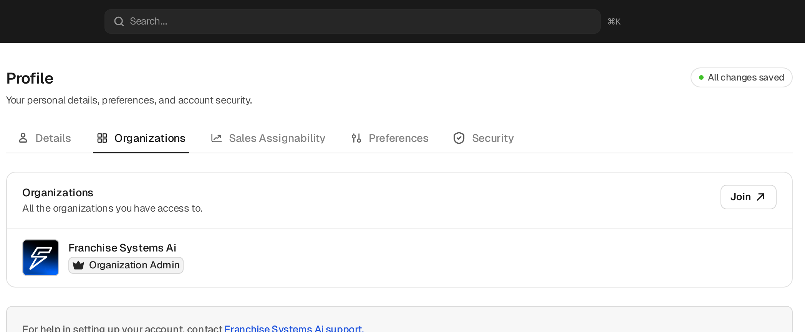
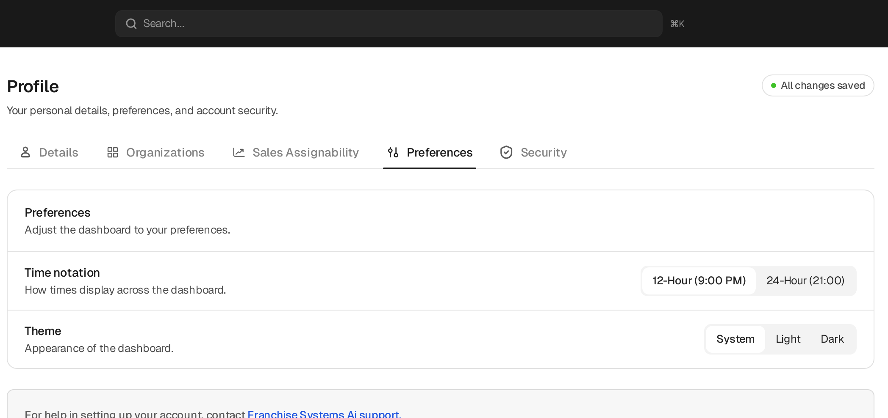
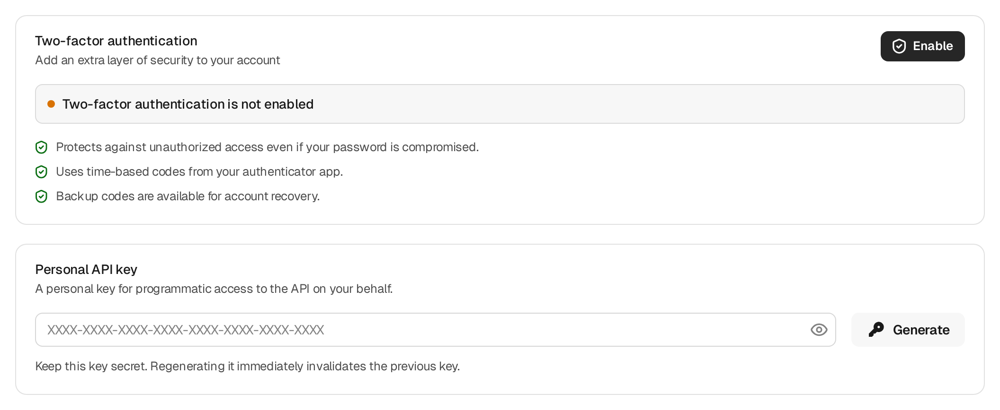
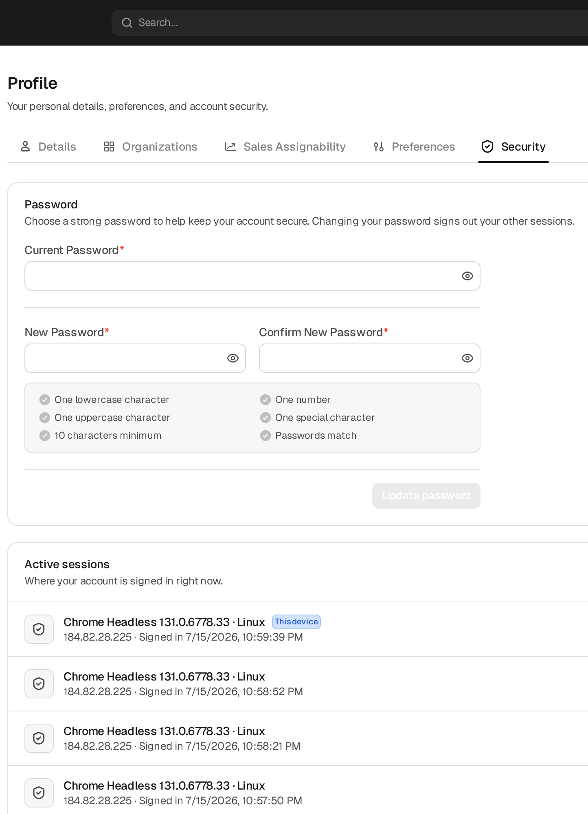
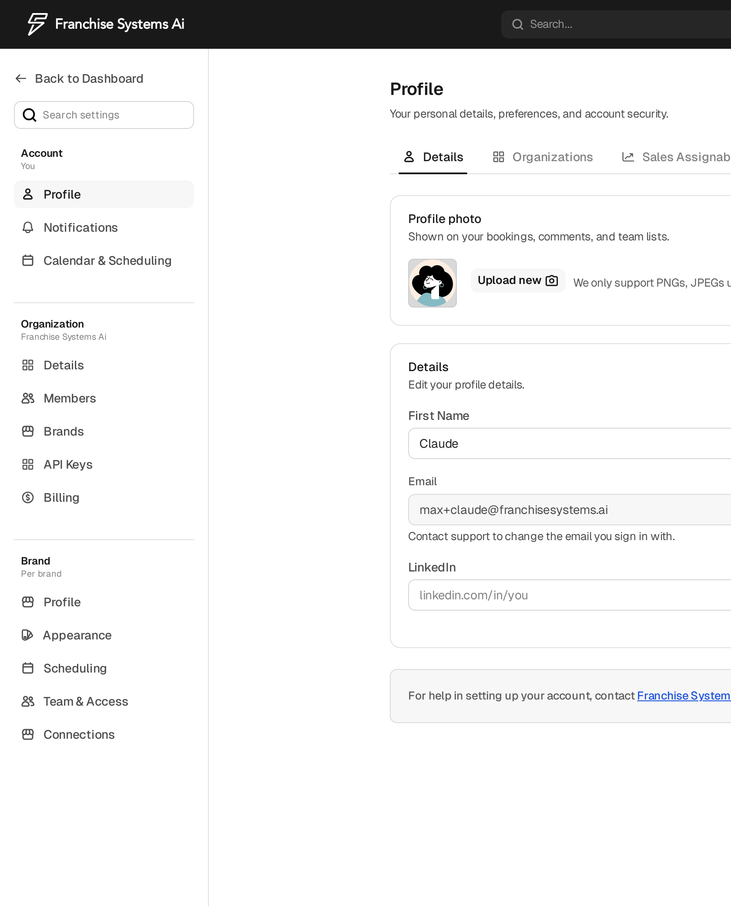
how-to-connect-your-calendar
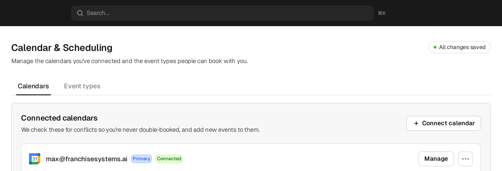
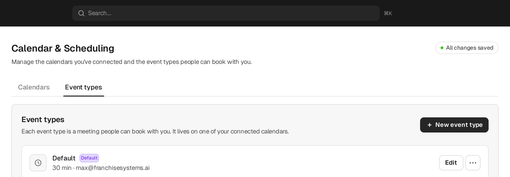
auto-and-manual-assignment
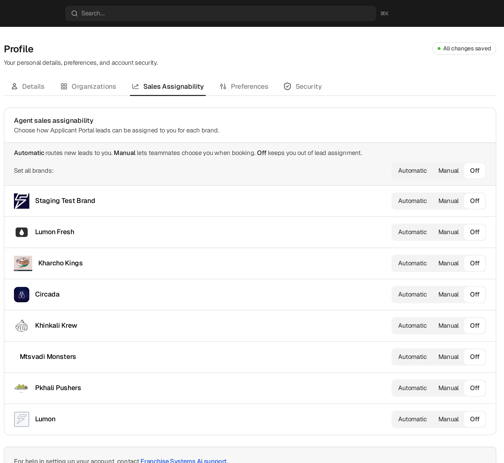
how-to-view-your-invoice

how-to-edit-your-portal
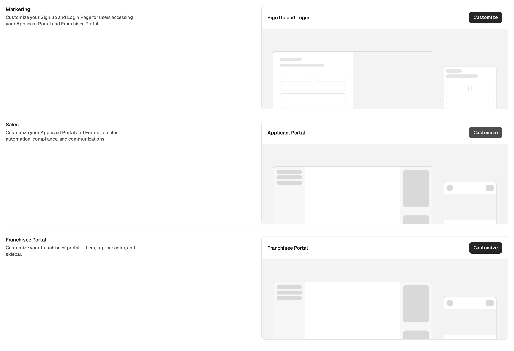
how-to-import-audiences
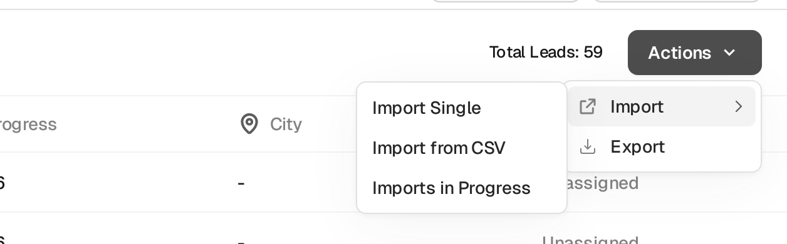
creating-content-and-workflows
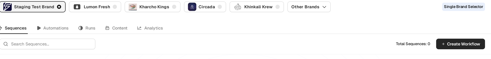